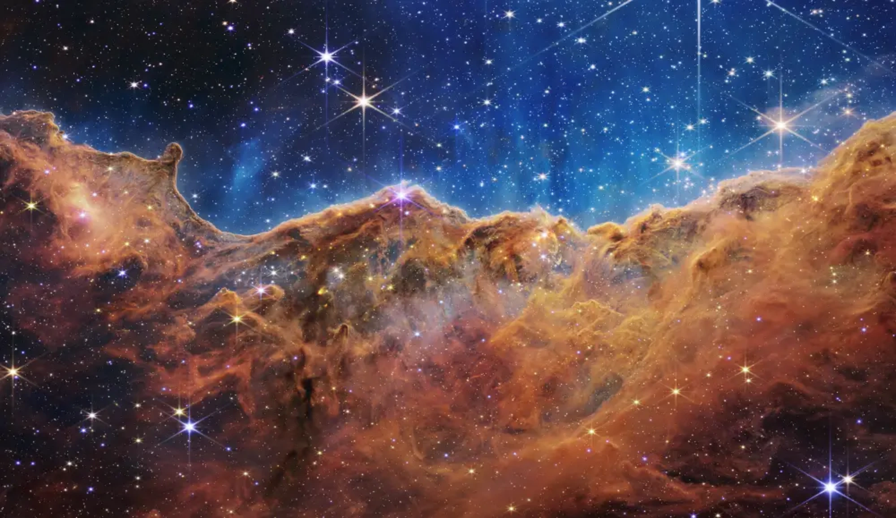

James Webb has also caught a glimpse of Stephan’s Quintet, a group of five galaxies that are merging some 290 million light-years away in the constellation Pegasus.

This landscape of “mountains” and “valleys” speckled with glittering stars is actually the edge of a nearby, young, star-forming region called NGC 3324 in the Carina Nebula.The image shows the galaxy cluster as it appeared 4.6 billion years ago. But more distant galaxies in the image (the ones which appear stretched) are about 13 billion years old